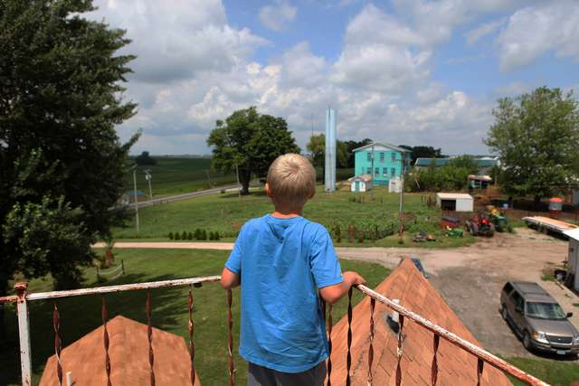
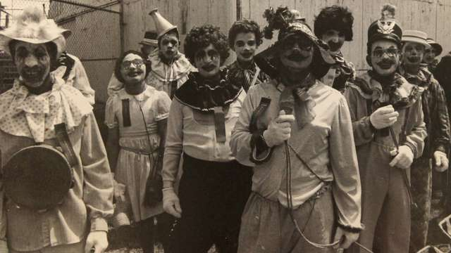
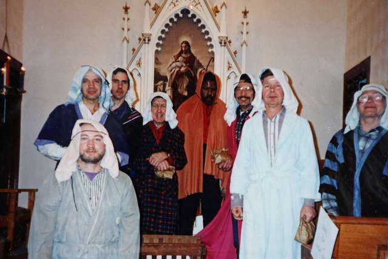

Outside

As the Atalissa fields marked time in the crop rotation of corn and soybean, the men in the hilltop schoolhouse aged into their 30s and then their 40s. But in keeping with their static existence, they remained the "boys."
"Even though they were adult men, they were boys to us," says Carol O'Neill, a member of a women's group called the Atalissa Betterment Committee. "They were like - our boys."
When the dozens of Texans first came to town, raising its population to a record 360, T. H. Johnson invited Atalissans to the schoolhouse for Christmas socials and summertime barbecues. The men showed off their pool table, exercise equipment and shared bedrooms, leaving a favorable first impression that would last.
Dennis Hepker, a former Atalissa mayor, remembers the envy he felt. "I was living on popcorn and Falstaff," he says. "I thought these guys had it made."
On Sunday mornings, some of the men walked down to the small Zion Lutheran Church, where a painting of Jesus holding a lamb adorns the altar. Unable to recite the Lord's Prayer, they hummed to its rhythmic entreaties instead, and often sang at the close of service.

"'Amazing Grace,'" recalls Mr. Levi, who also played a tambourine. "'Surely Goodness.' 'Give Me That Old-Time Religion.' All that."
The men pretty much kept the minimart open with their patronage, and were as central to the annual Atalissa Days parade as the fire trucks. A few would appear on a float in clown costumes and makeup - the Pagliacci of the cornfields.
The outfits were the handiwork of Wilma Rock, their beloved "Grandma." She wore a clown costume, too, Mr. Berg recalls. "She was a friend to us." And on weekend nights, you could expect to see some of the men at the Corner Tap bar, or the Old University, eager to socialize, eager to hug.
True, some local residents cringed when the "boys" walked in, reeking of turkey, interrupting conversations. Sometimes you just did not want to hear again about Willie Levi's birthday, or Gene Berg's fascination with John Deere tractors, or how much beer Henry Wilkins planned to drink at the county fair. Sometimes you just did not want a hug.
Then again, you might welcome a hug, or even a dance. "And if you danced with one of them, you danced with all of them," says Vada Baker, of the Atalissa Betterment Committee, who learned the Texas two-step from the men.
They were as present in Atalissa as the grain elevator beside the railroad tracks. You could easily forget how far these men were from home.
A lucky few returned South for a week's vacation every year. Others tried to stay in touch with family by schoolhouse telephone, some of them calling disconnected numbers, over and over, year after year. Or they lingered at the post office, where there was rarely anything for them, other than the candy on the counter.
But every once in a great while, a lucky man received a birthday card or Christmas letter, sent from another world.